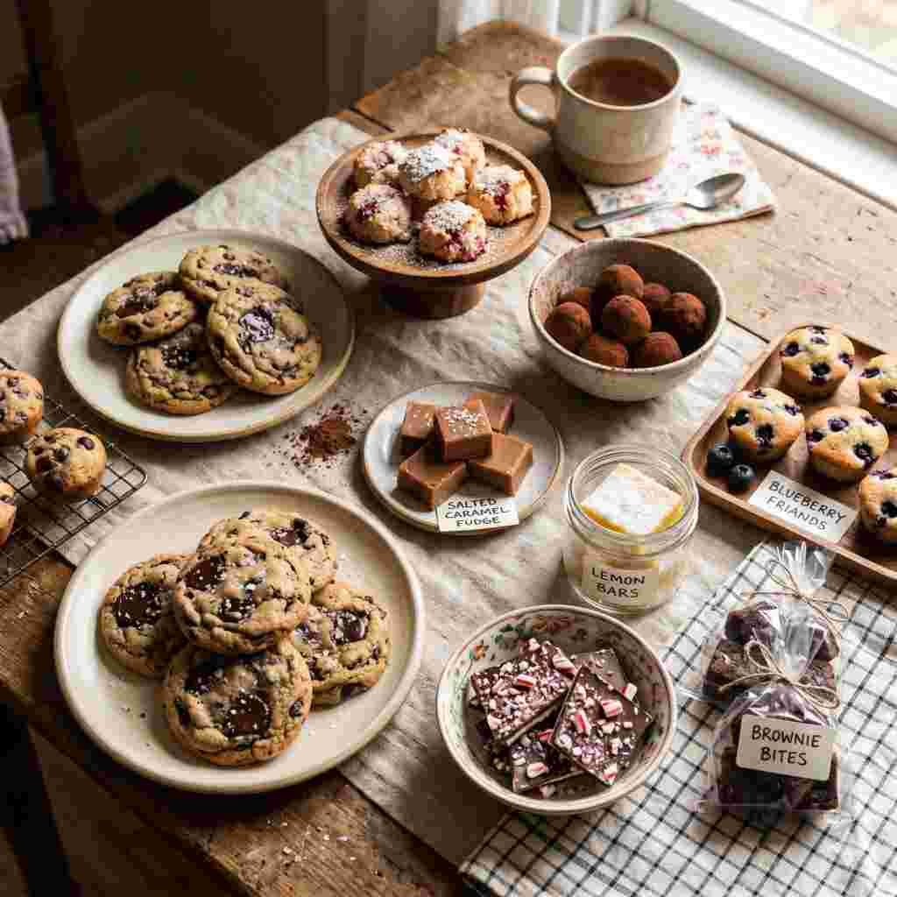
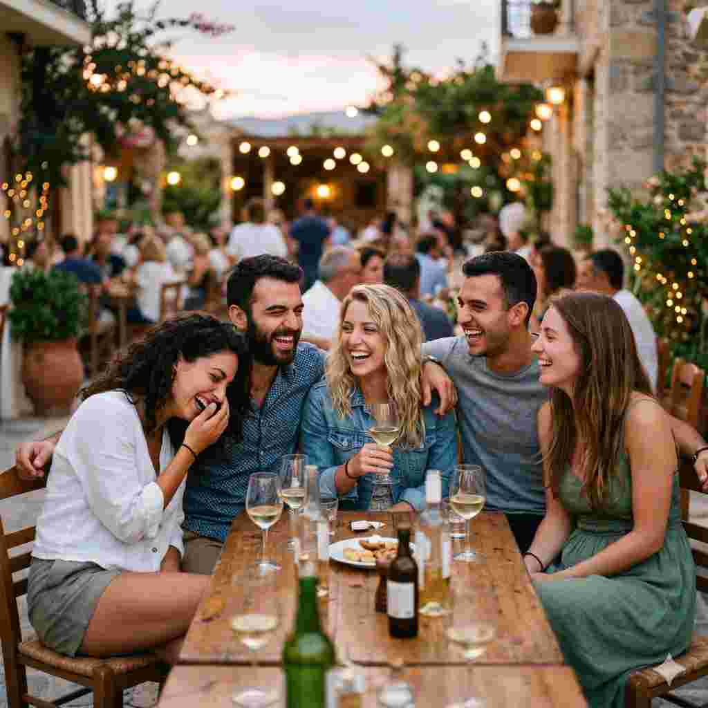
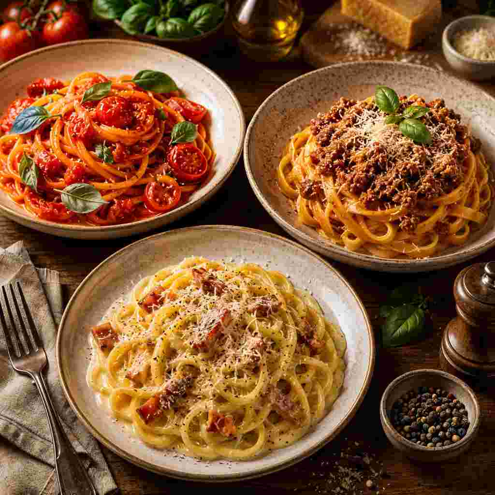

Οικογενειακή ιστορία
Ξεκινήσαμε ως ένα μικρό μεζεδοπωλείο στην πλατεία και μεγαλώσαμε αγκαλιά με τους πελάτες μας. Κάθε πιάτο κουβαλάει μια συνταγή της γιαγιάς και μια ιστορία της Γιωτάννας.
Στο «Μεράκι της Γιωτάννας» η κάθε μερίδα φτιάχνεται σαν να σερβίρεται σε δικό μας τραπέζι. Φρέσκα υλικά, αυθεντικές συνταγές και η ζεστασιά μιας μικρής γειτονιάς που μυρίζει σπίτι.
Ξεκινήσαμε ως ένα μικρό μεζεδοπωλείο στην πλατεία και μεγαλώσαμε αγκαλιά με τους πελάτες μας. Κάθε πιάτο κουβαλάει μια συνταγή της γιαγιάς και μια ιστορία της Γιωτάννας.
Η ντομάτα από τον κήπο, το ελαιόλαδο από τους ελαιώνες της περιοχής, τα κρεατικά από τον τοπικό κρεοπώλη. Επιλέγουμε με προσοχή για να γευτείτε αυθεντικά.
Από τη ζύμη της πίτσας που ζυμώνεται κάθε πρωί, μέχρι τα σπιτικά γλυκά μας — όλα φτιάχνονται με τα χέρια μας, χωρίς συντηρητικά και έτοιμα μείγματα.
Πιστεύουμε πως το καλό φαγητό θέλει και την κατάλληλη παρέα. Σας υποδεχόμαστε σαν φίλους και φροντίζουμε να φύγετε χορτάτοι και χαρούμενοι.
Από αυθεντική ιταλική πίτσα και ζουμερά burgers, μέχρι παραδοσιακά καλαμάκια, club sandwiches, ζυμαρικά και χειροποίητα γλυκά — έχουμε κάτι για κάθε διάθεση.
Γενέθλια, αρραβώνες, οικογενειακά τραπέζια ή απλά ένα Σαββατόβραδο. Φιλοξενούμε εκδηλώσεις με προσωπικό μενού και την προσοχή που τους αξίζει.
Επιλέξτε μια κάρτα για να διαβάσετε περισσότερα.
Ελληνικές ετικέτες από κάθε γωνιά της χώρας.
Φροντίζουμε για το περιβάλλον σε κάθε βήμα.
Έμπειροι σεφ και προσωπικό με μεράκι.
Στηρίζουμε τη γειτονιά που μας μεγάλωσε.
Κάθε εβδομάδα η Γιωτάννα ετοιμάζει ένα ξεχωριστό πιάτο με υλικά της εποχής. Δοκιμάστε το πριν τελειώσει!
Λεπτή ζύμη ζυμωμένη με προζύμι 48 ωρών, ντομάτα από τον κήπο μας, μοτσαρέλα ντι μπούφαλα, βασιλικός φρέσκος και ελαιόλαδο εξτρα παρθένο. Ψημένη στον ξυλόφουρνο για 90 δευτερόλεπτα.
Πατήστε σε ένα υλικό για να το εξαιρέσετε από την παραγγελία σας
Συμπληρώστε τη φόρμα και θα σας καλέσουμε για επιβεβαίωση. Ελάχιστη παραγγελία 8€ — δωρεάν από 15€.
Πίσω από κάθε πιάτο κρύβονται χρόνια αγάπης, χιλιάδες χαμόγελα και αμέτρητες στιγμές γιορτής γύρω από το τραπέζι.
Τρεις γρήγορες ερωτήσεις και η Γιωτάννα προτείνει τι θα σας ταιριάξει σήμερα.
—
€0.00Μικροί τοπικοί παραγωγοί που μοιράζονται τις ίδιες αξίες — φρέσκα υλικά, φροντίδα στη λεπτομέρεια και σεβασμός στη γη.
Δίρφυς · 8 χλμ.
Λαχανικά εποχής, αρωματικά και η ντομάτα μας από τον δικό τους κήπο.
Συνεργασία από το 2026Στενή · 15 χλμ.
Ασύρτικο, Αγιωργίτικο και ροζέ από αμπέλια οικογενειακής παραγωγής.
Βιολογική καλλιέργειαΠλατεία · 2 χλμ.
Επιλεγμένα κρεατικά ελευθέρας βοσκής για τα μπιφτέκια και τα καλαμάκια μας.
Καθημερινή παράδοσηΛιμάνι · 12 χλμ.
Φρέσκο ψάρι και θαλασσινά από τον τοπικό αλιευτικό συνεταιρισμό.
Πιάνεται το πρωίΨαχνά · 20 χλμ.
Πετρόμυλος που αλέθει σιτάρι από ντόπιες ποικιλίες για τη ζύμη μας.
Παραδοσιακή άλεσηΜακρυκάπα · 6 χλμ.
Θυμαρίσιο μέλι, ταχίνι και βασιλικός πολτός για τα γλυκά της Ελένης.
3 γενιές οικογένειαΜια ματιά στο μαγαζί μας, στα πιάτα μας και στις στιγμές που μοιραζόμαστε με τους πελάτες μας.







Πλατεία Αγίου Λουκά
Εύβοια, 34500
Ελλάδα
Πίσω από κάθε πιάτο, ένα χαμόγελο και πολύς κόπος. Οι άνθρωποι που φτιάχνουν το «Μεράκι της Γιωτάννας» κάθε μέρα.
Executive Chef
«Μεγάλωσα στην κουζίνα της γιαγιάς μου. Σήμερα μοιράζομαι τις συνταγές της με όλη τη γειτονιά.»
Executive Chef
«Η σχάρα είναι το βασίλειό μου. Από το πρώτο καλαμάκι, ξέρω πότε είναι τέλειο.»
Appetizer Chef
«Στα ορεκτικά σπιτικές συνταγές της μαμάς.»
Sommelier & Bar Manager
«Το σωστό cocktail κάνει το πιάτο να μιλήσει. Ζητήστε μου σύσταση — δεν χάνετε.»
Παιδικά πάρτυ, βαφτίσια, εταιρικά events. Φτιάχνουμε προσωπικό μενού, διακόσμηση και φροντίζουμε για όλα — εσείς απλά απολαύστε τη μέρα σας.
Επικοινωνήστε μαζί μαςΠίσω από κάθε πιάτο κρύβονται τέσσερα βήματα γεμάτα φροντίδα. Έτσι φτάνει στο τραπέζι σας κάθε μερίδα.
Κάθε πρωί φτάνουν στην πόρτα μας λαχανικά από τους κήπους της περιοχής, κρεατικά από τον τοπικό κρεοπώλη και ψάρι από τον λιμενοβραχίονα.
Η ζύμη μας ζυμώνεται με προζύμι 48 ωρών, οι σάλτσες σιγοβράζουν για ώρες και τα γλυκά φτιάχνονται στο χέρι κάθε πρωί.
Από τον φουρνο για τις πίτσες μέχρι την φωτιά για τα καλαμάκια — χρησιμοποιούμε παραδοσιακές τεχνικές που χαρίζουν αυθεντική γεύση.
Στο τραπέζι ή στην πόρτα σας μέσα σε 30–45 λεπτά, ζεστό και φρέσκο — πάντα συνοδευμένο από ένα ειλικρινές «καλή σας όρεξη».
Από τοπικές εφημερίδες μέχρι εθνικά media και διεθνείς γαστρονομικούς οδηγούς — δείτε τι λένε για εμάς.
«Η αυθεντική ελληνική φιλοξενία στο πιάτο. Δοκιμάστε την Πίτσα Παρθένος — αξίζει το ταξίδι.»
«Σπιτική κουζίνα στα καλύτερά της. Η Γιωτάννα μάς υποδέχτηκε σαν παλιούς γνώριμους.»
«Το πιο αγαπημένο μας μαγαζί στην Εύβοια. Καλαμάκια, πίτσα, κρασί — όλα τέλεια.»
«Ένα μικρό διαμάντι στην πλατεία. Σπιτικές γεύσεις και ζεστή ατμόσφαιρα σε κάθε επίσκεψη.»
Πιστεύω ότι το μεράκι δεν είναι κάτι που μαθαίνεις στις σχολές. Είναι ο τρόπος που η γιαγιά μου έβαζε λίγη παραπάνω αγάπη στο φαγητό όταν ήξερε ότι θα έρθουν φίλοι στο τραπέζι.
Σήμερα, κάθε ζύμη που ζυμώνεται, κάθε σάλτσα που σιγοβράζει, κάθε πιάτο που σερβίρουμε — όλα κρύβουν αυτή τη μικρή, αόρατη επιπλέον προσοχή. Γι' αυτό σας περιμένουμε στο τραπέζι μας — όχι σαν πελάτες, αλλά σαν παρέα.
Τα πιάτα που κερδίζουν τις καρδιές σας. Ο πίνακας ενημερώνεται κάθε Δευτέρα με βάση τις παραγγελίες της προηγούμενης εβδομάδας.
Η αγαπημένη μας πίτσα με ζαμπόν, μπέικον, μανιτάρια και πιπεριά.
Επιλεγμένο χοιρινό, μαριναρισμένο σπιτικά με λεμόνι και μπαχαρικά.
Αυθεντική Mε κρέμα γάλακτος, μπέικον και μανιτάρια.
Μοσχαρίσιο μπιφτέκι , τσένταρ, μαρούλι, ντομάτα και σπιτική σος.
Μαρούλι, κρουτόν, καλαμπόκι, τυρί, κοτόπουλο, σως.
Στατιστικά παραγγελιών για την εβδομάδα 28 Απρ — 4 Μαΐ 2026
★★★★★«Η καλύτερη πίτσα που έχω φάει στην περιοχή. Νιώθεις σαν στο σπίτι σου, και η Γιωτάννα φροντίζει προσωπικά για όλους.»
— Ελένη Κ.
★★★★★«Πήγα τυχαία και έγινε το αγαπημένο μου εστιατόριο. Καλαμάκια αξιολάτρευτα, σπιτικές πατάτες και τέλεια εξυπηρέτηση.»
— Γιάννης Δ.
★★★★★«Παίρνουμε delivery σχεδόν κάθε εβδομάδα. Πάντα ζεστό, πάντα στην ώρα του, πάντα με χαμόγελο.»
— Οικογένεια Παπά
★★★★★«Γιορτάσαμε τα γενέθλια του γιου μας εδώ και έγινε αξέχαστο. Η Γιωτάννα φρόντισε για όλα, ακόμα και για τη σπιτική τούρτα έκπληξη!»
— Σοφία Μ.
★★★★★«Δοκιμάσαμε την καρμπονάρα μετά από σύσταση και ήταν αυθεντική, σαν στη Ρώμη. Επιστρέφουμε σίγουρα.»
— Νίκος & Άννα
★★★★★«Ωραία ατμόσφαιρα, ευγενικό προσωπικό και τιμές που σε εκπλήσσουν ευχάριστα. Έχει γίνει το στέκι της παρέας μας.»
— Δημήτρης Λ.
Σύντομες απαντήσεις στα πιο συχνά ερωτήματα για το delivery, τις κρατήσεις και τις εκδηλώσεις μας.
Στις περισσότερες παραγγελίες παραδίδουμε σε 30–45 λεπτά. Τις ώρες αιχμής (Παρασκευή & Σάββατο βράδυ) μπορεί να φτάσει τα 60 λεπτά — σας ενημερώνουμε πάντα κατά την επιβεβαίωση.
Ναι. Από μαργαρίτες μέχρι ζυμαρικά και φρέσκες σαλάτες — έχουμε πιάτα και για χορτοφάγους και για vegan. Ρωτήστε μας ή σημειώστε το στις «Σημειώσεις» της παραγγελίας.
Φιλοξενούμε τραπέζια έως 30 ατόμων. Για 9+ άτομα συνιστούμε να επικοινωνήσετε τηλεφωνικά τουλάχιστον 24 ώρες πριν, ώστε να σας ετοιμάσουμε ξεχωριστή γωνιά.
Ναι — βαφτίσια, γενέθλια, αρραβώνες και εταιρικά events με προσωπικό μενού. Στείλτε email στο giwtanna@gmail.com και θα σας προτείνουμε ολοκληρωμένο πακέτο.
Διαθέτουμε ζύμη πίτσας χωρίς γλουτένη και αρκετά πιάτα είναι φυσικά gluten-free. Εξυπηρετούμε σε ξεχωριστή επιφάνεια για να αποφύγουμε επιμολύνσεις — ενημερώστε μας πριν παραγγείλετε.
Ναι, υπάρχει δημόσιος χώρος στάθμευσης 50 μέτρα από το μαγαζί καθώς και ελεύθερες θέσεις στους γύρω δρόμους. Τα Σαββατοκύριακα προτείνουμε να έρθετε λίγο νωρίτερα.
Επιλέξτε ημέρα, ώρα και αριθμό ατόμων. Θα λάβετε επιβεβαίωση εντός 30 λεπτών.
Συγκεντρώστε 10 σφραγίδες και κερδίστε ένα δωρεάν πιάτο της επιλογής σας. Ισχύει για παραγγελίες delivery και επιτόπια κατανάλωση — χωρίς εφαρμογή, χωρίς εγγραφή.
Συγκεντρώστε 10 σφραγίδες
5 από 10 σφραγίδες — άλλες 5 για το δώρο σας!